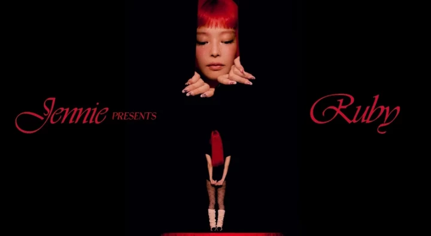

·个人信息
姓名:金珍妮(Jennie Kim、김제니)
昵称：饺子/煎妮
星座：摩蝎座
国籍：韩国
爱好：摄影
出生日期:1996年1月16日
喜欢的颜色：蓝色、绿色
·个人介绍
金珍妮,1996年1月16日出生于韩国京畿道城南市盆唐区,是韩国女歌手、Rapper、舞者、词曲作者, 也是女团BLACKPINK的核心成员之一,担任主Rapper与主唱。
8岁起赴新西兰奥克兰留学 5 年，14 岁回国，2011年进入YG娱乐成为练习生， 2016年8月8日，Jennie 随BLACKPINK正式出道，发行首张单曲专辑《SQUARE ONE》， 主打歌《WHISTLE》和《BOOMBAYAH》迅速走红，成为韩国乐坛现象级新人。
2018年11月12日，Jennie 发行个人单曲《SOLO》，成为BLACKPINK中首位solo出道的成员。 2023年底，Jennie 成立个人厂牌Odd Atelier，开始独立运营个人事业。 2024年，她与美国Columbia Records签约，成为首位与该厂牌合作的韩国女solo歌手， 标志着其国际影响力的进一步提升。
·代表作品
代表作品：《SOLO》、《Ruby》、《Mantra》、 《You & Me》、《like jennie》、《with the IE(way up)》、《Starlight》等
·主要奖项
第8届Gaon Chart音乐奖 音源部门年度歌手奖
第34届金唱片奖 音源本赏
2024年MAMA大奖：最佳女solo舞蹈表演、最佳合作、最佳说唱&嘻哈表演、全球粉丝选择女艺人
2025年Billboard Women in Music 全球影响力奖